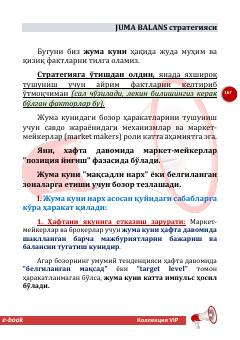

JBForex bozorida Juma kuni narx harakatlarini tahlil qilish va savdo strategiyasini qo'llash bo'yicha qo'llanma.
Ushbu qo'llanma Forex bozorida, xususan oltin (XAU/USD) savdosida 'Juma balans' strategiyasidan foydalanish usullarini tushuntiradi. Kitobda bozor mexanizmlari, market-meykerlarning roli va haftaning oxirgi ish kunidagi narx harakatlarini tahlil qilish strategiyalari bayon etilgan.